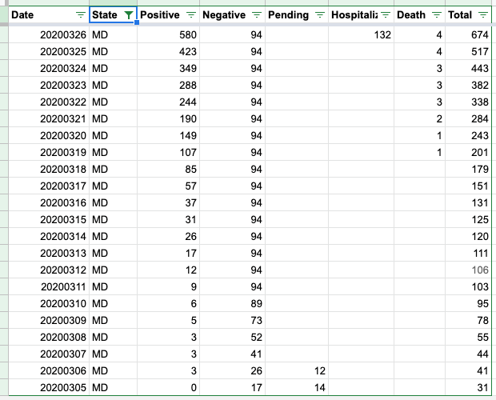

MD case: consider removing no- longer- reported stats
Issue number 48
gmurray3 opened this issue on March 24, 2020 at 7:28 pm
Greetings and thanks for tbe important work you and your teams are doing.
Im reaching out to request removal of Maryland’s negative and pending cases counts because they are no longer being published by Maryland.
Keeping those data from 3/12 while tbe positive reported cases climb artificially skew rates and metrics being reported from your Maryland data. This is a disservice to tbe people here who are getting disheartened and not trusting the measures are working or that health officials are working and doing tests.
Please consider treating all data for states no longer reporting this way. You may consider providing guidance for estimating or imputing pendings and negatives based on area observed averages or something. I appreciate this will effectively limit the power of your data, but reporting in this way can be harmful and hurtful to the public who look to you for facts during this crisis.
Comments
W
@gmurray3 you are highlighting a very important aspect/duty of all citizens: Demand more from your government. If CDC was doing its job, we would not be having this discussion. Fortunately, we are seeing states everywhere stepping up and delivering the data that the people deserve.
Elections Matter.
We have a standing policy - once a negative, always a negative. When more data come available, all of COVID Dataville will rejoice.
With Pending data, we do discontinue reporting it when it is no longer available.
Here is our MD Data:

Unfortunate you take that position. This has nothing to do with CDC policy. I demand more of people who publish health statistics to generate generate panic. This is good news though, for my own writing and dissertation as I collect data sources like yours as examples of irresponsible data practices in times of crisis.
All tbe best, Gordon Murray
On Fri, Mar 27, 2020, 12:59 AM Elliott Klug <notifications@github.com wrote:
W
@gmurray3 https://github.com/gmurray3 you are highlighting a very important aspect/duty of all citizens: Demand more from your government. If CDC was doing its job, we would not be having this discussion. Fortunately, we are seeing states everywhere stepping up and delivering the data that the people deserve.
Elections Matter.
We have a standing policy - once a negative, always a negative. When more data come available, all of COVID Dataville will rejoice.
With Pending data, we do discontinue reporting it when it is no longer available. Here is our MD Data: [image: Screen Shot 2020-03-27 at 12 52 52 AM] <…/assets/images/github/43073915/77722956-74f9f480-6fc5-11ea-8fbe-842cc56de0be.png>
— You are receiving this because you were mentioned. Reply to this email directly, view it on GitHub https://github.com/COVID19Tracking/issues/issues/48#issuecomment-604815834, or unsubscribe https://github.com/notifications/unsubscribe-auth/AO52FQI6E6L3D6ASVIA5UQTRJQXDNANCNFSM4LTCVBFQ .
Hey @gmurray3 we explicitly note that Maryland no longer reports negatives on the Maryland state page and we document our policy on how we handle negatives in our Newsroom FAQ.
Reasonable people can disagree about the right way to handle this data; when we make decisions we try our best to document them.
@careeningspace and others are volunteering their time to produce a data set critical for decision making in the US. We are all quite stressed right now but your accusation that we are trying to “generate panic” is not appreciated.
While we have not made time to create a code of conduct for our repos yet, I’m going to lock conversation on this issue and block you from filing further issues on this repo.
Please try to stay positive in the future when commenting on a project run by volunteers.
Maryland has an order out requiring weekly updates of negatives. The order went out 3/23, so new numbers should be available by 3/30.